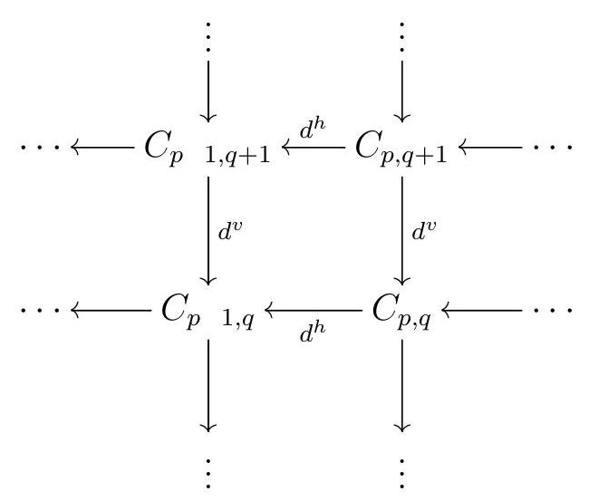
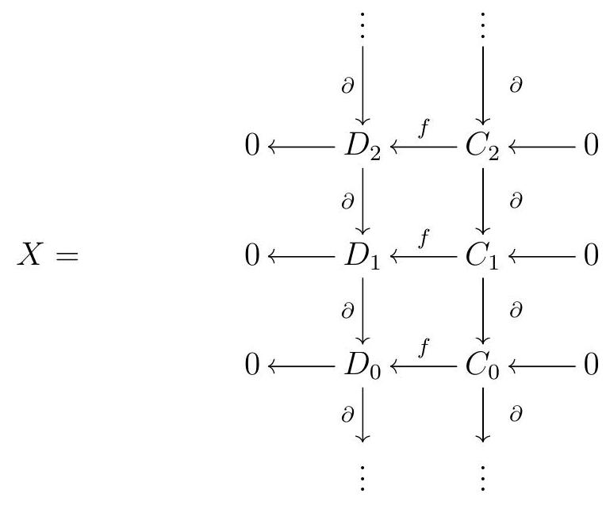
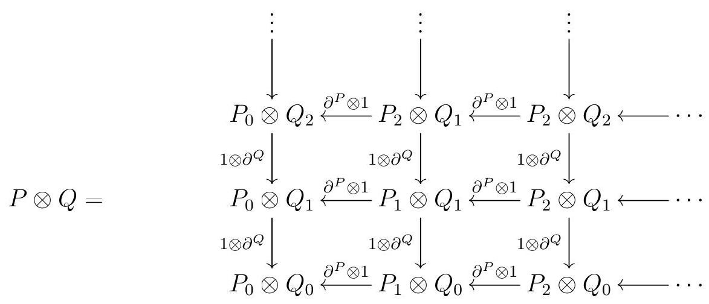
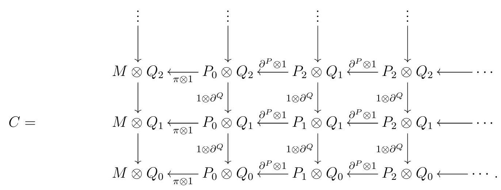
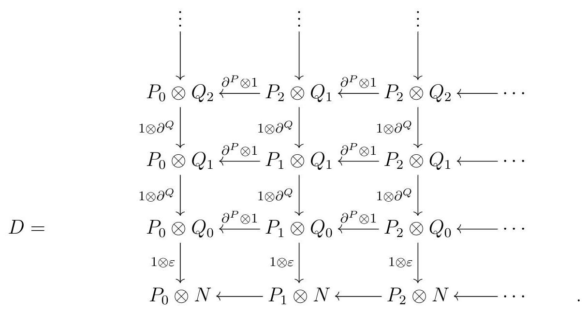
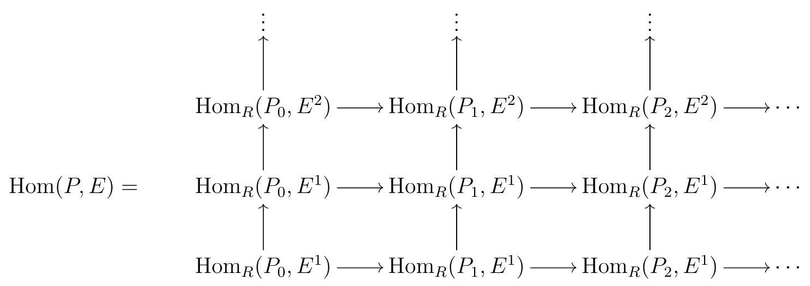
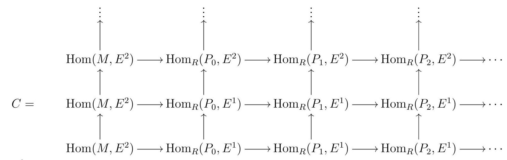
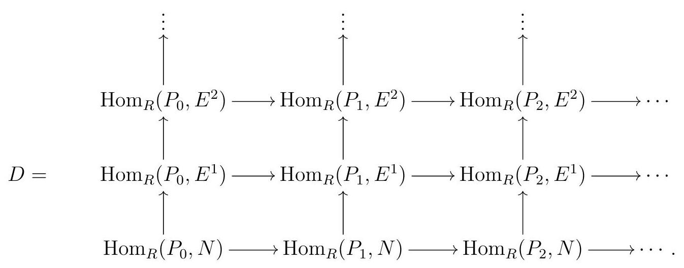
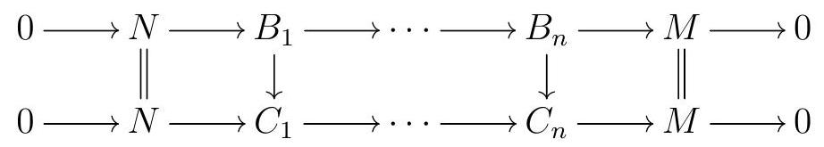

Section 6.2 A First Look at \(\Ext\) and \(\Tor\)
Subsection Double Complexes
“”―
It’s time to return to study some concrete examples of derived functors: Ext, the derived functor of Hom, and Tor, the derived functor of tensor. Given two modules \(M\) and \(N\text{,}\) we may consider the derived functors of \(M \otimes_{R}\text{,}\) and then plug in \(N\text{,}\) or we may consider the derived functors of \(\otimes_{R} N\text{,}\) and plug in \(M\text{;}\) it turns out that the two are naturally isomorphic, and this is the Tor functor:
\begin{equation*}
\operatorname{Tor}_{i}^{R}(M, N):=L_{i}\left(M \otimes_{R}\right)(N) \cong L_{i}\left(\otimes_{R} N\right)(M)
\end{equation*}
More precisely, if \(P\) is a projective resolution of \(M\text{,}\) and \(Q\) is a projective resolution of \(N\text{,}\)
\begin{equation*}
\operatorname{Tor}_{i}^{R}(M, N):=\mathrm{H}_{i}\left(P \otimes_{R} N\right) \cong \mathrm{H}_{i}\left(M \otimes_{R} Q\right) .
\end{equation*}
There are two Hom functors, each with its own derived functor: given \(R\)-modules \(M\) and \(N\text{,}\) we may take a projective resolution \(P\) of \(M\text{,}\) and compute \(\mathrm{H}^{i}\left(\operatorname{Hom}_{R}(P, N)\right)\text{,}\) or we could take an injective resolution \(E\) of \(N\text{,}\) and compute \(\mathrm{H}^{i}\left(\operatorname{Hom}_{R}(M, E)\right)\text{.}\) It turns out these two completely different sounding constructions give us isomorphic \(R\)-modules:
\begin{equation*}
\begin{aligned}
\operatorname{Ext}_{R}^{i}(M, N) & :=R^{i}\left(\operatorname { H o m } _ { R } ( M , \quad ) ( N ) \cong R ^ { i } \left(\operatorname{Hom}_{R}(, N)(M)\right.\right. \\
& \cong \mathrm{H}^{i}\left(\operatorname{Hom}_{R}(P, N)\right) \cong \mathrm{H}^{i}\left(\operatorname{Hom}_{R}(M, E)\right)
\end{aligned}
\end{equation*}
To show that for each of Ext and Tor these two seemingly unrelated definitions agree, we will need some more tools.
Definition 6.9. Suspension.
The suspension or shift of a complex \(C\) is the complex \(\Sigma C:=C[1]\) with
\begin{equation*}
(\Sigma C)_{n}=C_{n} \quad \text { and } \quad \partial^{\Sigma C}=\partial^{C} \text {. }
\end{equation*}
Given an integer \(k\text{,}\) the \(k\) th suspension of \(C\) is the complex
\begin{equation*}
\Sigma^{k} C:=\underbrace{\sum \cdots \Sigma}_{k \text { times }} C \quad \text { with } \partial^{\Sigma^{k} C}=(1)^{k} \partial^{C}
\end{equation*}
Note that there are two conventions in the literature, the other one being \((\Sigma C)_{n}=C_{n+1}\text{.}\)
Definition 6.10. Double Complex.
A (homological) double complex over the ring \(R\) is a family of \(R\)-modules \(\left\{C_{p, q}\right\}_{p, q \in \mathbb{Z}}\) together with homomorphisms of \(R\)-modules \(d^{h}: C_{p, q} \rightarrow C_{p} \quad{ }_{1, q}\) and \(d^{v}: C_{p, q} \rightarrow\) \(C_{p, q} 1\) satisfying

\begin{equation*}
d^{h} d^{h}=0 \quad d^{v} d^{v}=0 \quad d^{h} d^{v}+d^{v} d^{h}=0
\end{equation*}
Remark 6.11.
Note that if \(C\) is a double complex, then each row and each column is a complex: if we fix \(p, C_{p, \bullet}\) is a complex with differential \(d^{v}\text{;}\) if we fix \(q, C_{\bullet, q}\) is a complex with differential \(d^{h}\text{.}\)
What we defined above is a homological double complex. A cohomological double complex would have vertical and horizontal maps that go up in index, and we instead write \(C^{p, q}\) for the module in position \((p, q)\text{.}\) Also, please note that there are different conventions in the literature for whether \(p\) refers to the row or column.
Definition 6.12. Total Complex.
Given a double complex \(C\text{,}\) its total complex is the complex given by
\begin{equation*}
\operatorname{Tot}^{\oplus}(C)_{n}:=\bigoplus_{p+q=n} C_{p, q} \quad \text { with differential } d=d^{h}+d^{v}
\end{equation*}
Similarly, the product total complex of \(C\) is given by
\begin{equation*}
\operatorname{Tot}^{\Pi}(C)_{n}:=\prod_{p+q=n} C_{p, q} \quad \text { with differential } d=d^{h}+d^{v}
\end{equation*}
Remark 6.13.
Let \(C\) be a double complex with differentials \(d^{v}\) and \(d^{h}\text{.}\) Then
\begin{equation*}
\left(d^{h}+d^{v}\right)\left(d^{h}+d^{v}\right)=\underbrace{d^{h} d^{h}}_{0}+\underbrace{d^{h} d^{v}+d^{v} d^{h}}_{0}+\underbrace{d^{v} d^{v}}_{0}=0
\end{equation*}
so \(\left(\operatorname{Tot}^{\oplus}(C), d\right)\) and \(\left(\operatorname{Tot}^{\Pi}(C), d\right)\) are indeed complexes.
In order to prove our two definitions of Ext and Tor each agree, we will need two special double complexes: the tensor and the Hom double complex.
Definition 6.14. Tensor Product Double Complex.
Let \(R\) be a ring and \(C\) and \(D\) be complexes of \(R\)-modules. The tensor product double complex of \(C\) and \(D\) is the double complex \(C \otimes D\) given by taking
\begin{equation*}
(C \otimes D)_{p, q}=C_{p} \otimes D_{q} \quad d^{h}=\partial^{C} \otimes_{R} 1_{D}, \quad \text { and } \quad d^{v}=(1)^{p} 1_{C} \otimes_{R} \partial^{D}
\end{equation*}
We call the total complex of the tensor product double complex of \(C\) and \(D\) the tensor product of \(C\) and \(D\) in \(\mathrm{Ch}(R)\text{,}\) and denote it by \(C \otimes D\text{.}\)
Remark 6.15.
The tensor product total complex has
\begin{equation*}
\operatorname{Tot}^{\oplus}(C \otimes D)_{n}=\bigoplus_{p+q=n} C_{n} \otimes_{R} D_{n}
\end{equation*}
and differential
\begin{equation*}
d(x \otimes y)=\partial(x) \otimes y+(1)^{p} x \otimes \partial(y)
\end{equation*}
for \(x \in C_{p}\) and \(y \in D_{q}\text{.}\)
Definition 6.16. \(\Hom\) Double Complex.
Let \(R\) be a ring and \(C\) and \(D\) be complexes of \(R\)-modules. The Hom double complex of \(C\) and \(D\) is the double complex \(\operatorname{Hom}(C, D)\) given by
\begin{equation*}
(\operatorname{Hom}(C, D))_{p, q}:=\operatorname{Hom}_{R}\left(C_{p}, D_{q}\right)
\end{equation*}
with differentials
\begin{equation*}
\begin{array}{cr}
\operatorname{Hom}_{R}\left(C_{p}, D_{q}\right) \stackrel{d^{h}}{\longrightarrow} \operatorname{Hom}_{R}\left(C_{p}{ }_{1}, D_{q}\right) & \text { and } \operatorname{Hom}_{R}\left(C_{p}, D_{q}\right) \stackrel{d^{v}}{\longrightarrow} \operatorname{Hom}_{R}\left(C_{p}, D_{q}{ }^{1}\right) . \\
f \stackrel{C}{ } \stackrel{f}{\longrightarrow}(1)^{p+q+1} \partial^{D} \circ f
\end{array}
\end{equation*}
We call the product total complex of the Hom double complex of \(C\) and \(D\) the (internal) Hom complex of \(C\) and \(D\text{,}\) and denote it by \(\operatorname{Hom}(C, D)\text{.}\)
Remark 6.17.
The Hom complex of \(C\) and \(D\) is the complex
\begin{equation*}
\operatorname{Hom}(C, D)_{n}=\prod_{p+q=n} \operatorname{Hom}_{R}\left(C_{p}, D_{q}\right)
\end{equation*}
with differential \(d(f)=f \circ \partial^{C}+(1)^{p+q+1} \partial^{D} \circ f\) for each \(f \in \operatorname{Hom}_{R}\left(C_{p}, D_{q}\right)\text{.}\)
Remark 6.18.
Given \(C\) and \(D\) in \(\mathrm{Ch}(R)\text{,}\) what is a 0 -cycle in the Hom complex \(\operatorname{Hom}(C, D)\) ? A 0 -cycle is a sequence of maps of \(R\)-modules \(f_{k}: C_{k} \rightarrow D_{k}\) satisfying \(f \partial^{C} \quad \partial^{D} f=0\text{,}\) so the 0 -cycles are precisely the maps of complexes \(C \rightarrow D\text{.}\) Similarly, a sequence of maps \(f_{k}: C_{k} \rightarrow D_{k}\) is a 0-boundary if there exists a sequence of maps \(h_{k}: C_{k} \rightarrow D_{k+1}\) such that \(f_{k}=\partial^{D} h_{k}+h_{k}{ }_{1} \partial^{C}\text{.}\) In other words, a 0-boundary indicates a homotopy relation - if \(f \quad g\) is a 0-boundary, \(f\) and \(g\) are homotopic maps.
Definition 6.19. Cone.
Let \(f: C \rightarrow D\) be a map of complexes. The cone of \(f\) is the complex cone \((f)\) with cone \((f)_{n}=C_{n} \quad 1 \oplus D_{n}\) and differential given by
\begin{equation*}
\partial_{n}:=\left(\begin{array}{cc}
\partial_{C} & 0 \\
f & \partial_{D}
\end{array}\right): \begin{array}{cc}
C_{n} & 1 \stackrel{\partial^{C}}{\longrightarrow} C_{n} \quad 2 \\
& \oplus D_{n} \underset{\partial^{D}}{\longrightarrow} D_{n} \quad 1
\end{array}
\end{equation*}
Remark 6.20.
There are different conventions for the sign in front of \(f\) in the definition of the differentials on the cone of \(f\text{.}\) Weibel [Wei94] defines
\begin{equation*}
\partial_{n}:=\left(\begin{array}{cc}
\partial_{C} & 0 \\
f & \partial_{D}
\end{array}\right)
\end{equation*}
and some authors even write
\begin{equation*}
\partial_{n}:=\left(\begin{array}{cc}
\partial_{C} & 0 \\
(1)^{n} f & \partial_{D}
\end{array}\right)
\end{equation*}
All of these choices do make our proposed differential a differential (check it!). The facts below about the mapping cone are all true up to sign whatever the sign convention we follow.
Exercise 6.21.
Let \(f: C \rightarrow\) be a map of complexes. Show that giving a map of complexes cone \((f) \rightarrow E\) is the same as giving a map of complexes \(D \stackrel{g}{\rightarrow} E\text{,}\) and a homotopy between \(g f\) and 0 .
Exercise 6.22.
Let \(f: A \rightarrow B\) be a map of complexes. Show that \(f\) is nullhomotopic if and only of \(f\) factors through the canonical map \(A \rightarrow \operatorname{cone}\left(\operatorname{id}_{A}\right)\text{.}\)
Remark 6.23.
Given any map of complexes \(C \stackrel{f}{\longrightarrow} D\text{,}\) there is a short exact sequence
\begin{equation*}
0 \longrightarrow D \longrightarrow \operatorname{cone}(f) \longrightarrow \Sigma^{1} C \longrightarrow 0
\end{equation*}
determined by the canonical arrows to and from the product \(\equiv\) coproduct. The connecting arrows from the Snake Lemma
\begin{equation*}
\mathrm{H}_{n \quad 1}(C)=\mathrm{H}_{n}\left(\Sigma{ }^{1} C\right) \stackrel{\delta}{\longrightarrow} \mathrm{H}_{n \quad 1}(D)
\end{equation*}
are exactly \(\mathrm{H}_{n} \quad 1(f): \mathrm{H}_{n} \quad{ }_{1}(C) \rightarrow \mathrm{H}_{n} \quad{ }_{1}(D)\) induced by \(f\text{,}\) so there is a long exact sequence
\begin{equation*}
\cdots \longrightarrow \mathrm{H}_{n+1}(\operatorname{cone}(f)) \longrightarrow \mathrm{H}_{n}(C) \stackrel{\mathrm{H}_{n}(f)}{\longrightarrow} \mathrm{H}_{n}(D) \longrightarrow \mathrm{H}_{n}(\operatorname{cone}(f)) \longrightarrow \mathrm{H}_{n} \quad 1(C) \longrightarrow \cdots
\end{equation*}
As a consequence, \(f\) is a quasi-isomorphism if and only if cone \((f)\) is exact.
Remark 6.24.
Given a map of complexes \(C \stackrel{f}{\longrightarrow} D\text{,}\) we can construct a double complex from \(f\text{,}\) as follows:

Note that \(\operatorname{Tot}^{\oplus}(X)=\operatorname{cone}(f)\text{.}\)
Now that we have introduced all the tools we need, the last thing we need is a technical but very useful lemma.
Lemma 6.25. Acyclic Assembly Lemma.
Let \(C\) be a double complex in \(R\) Mod.
- If \(C\) is an upper half plane double complex with exact rows, meaning \(C_{p, q}=0\) whenever \(q<0\text{,}\) then \(\operatorname{Tot}^{\oplus}(C)\) is exact.
- If \(C\) is a right half plane double complex with exact columns, meaning \(C_{p, q}=0\) whenever \(p<0\text{,}\) then \(\operatorname{Tot}^{\oplus}(C)\) is exact.
- If \(C\) is an upper half plane double complex with exact columns, meaning \(C_{p, q}=0\) whenever \(q<0\text{,}\) then \(\operatorname{Tot}^{\Pi}(C)\) is exact.
- If \(C\) is a right half plane double complex with exact rows, meaning \(C_{p, q}=0\) whenever \(p<0\text{,}\) then \(\operatorname{Tot}^{\Pi}(C)\) is exact.
Proof.
Notice that \(\mathrm{a} \Leftrightarrow \mathrm{b}\) and \(\mathrm{c} \Leftrightarrow \mathrm{d}\) by switching the indexes. Moreover, we claim that it is sufficient to show \(c\text{,}\) since it implies \(b\text{.}\)
To show that \(\mathrm{c}\) implies \(\mathrm{b}\text{,}\) we need some notation. Given a double complex \(C\text{,}\) consider the \(n\)th truncation \(\tau_{n}(C)\) of \(C\) defined by
\begin{equation*}
\tau_{n}(C)_{p, q}:= \begin{cases}C_{p, q} & \text { if } q>n \\ \operatorname{ker}\left(C_{p, n} \stackrel{d^{v}}{\longrightarrow} C_{p, n} \quad 1\right) & \text { if } q=n \\ 0 & \text { if } q<n\end{cases}
\end{equation*}
The natural inclusion \(\tau_{n}(C) \rightarrow C\) induces an isomorphism in homology for \(i \geqslant n\text{.}\)
Suppose that \(C\) is a right half plane double complex with exact columns, and assume that \(\mathrm{c}\) holds. Then \(\tau_{n}(C)\) still has exact columns, so by c, \(\operatorname{Tot} \Pi_{(}\left(\tau_{n}(C)\right)\) is exact. On the other hand, notice that up to a vertical shift, \(\tau_{n}(C)\) is a first quadrant double complex, and for each fixed \(m\text{,}\) there are only finitely many values of \(p\) and \(q\) with \(p+q=m\) and such that \(\tau_{n}(C)_{p, q} \neq 0\text{.}\) Therefore, \(\operatorname{Tot}^{\Pi}\left(\tau_{n}\left(C_{p, \bullet}\right)\right)=\operatorname{Tot}^{\oplus}\left(\tau_{n}\left(C_{p, \bullet}\right)\right)\text{,}\) so \(\operatorname{Tot}^{\oplus}\left(\tau_{n}\left(C_{p, \bullet}\right)\right)\) is exact. We claim that this implies that \(\operatorname{Tot}^{\oplus}(C)\) is exact. One can make this precise by saying \(\operatorname{Tot}^{\oplus}(C)=\operatorname{colim}_{n}\left(\operatorname{Tot}^{\oplus}(C)\right)\text{.}\) The point is that any element \(a \in Z_{k}\left(\operatorname{Tot}^{\oplus}(C)\right)\text{,}\) when we write \(a\) explicitly as \(a=\left(a_{p, q}\right) \in \oplus_{p+q=k} C_{p, q}\) in terms of its coordinates in each \(C_{p, q}\text{,}\) only finitely many \(a_{p, q}\) are nonzero. Let \(q\) be the smallest such that \(a_{p, q} \neq 0\text{,}\) and fix any \(n<q\text{.}\) Then
\begin{equation*}
a \in Z_{k}\left(\operatorname{Tot}^{\oplus}\left(\tau_{n}(C)\right)\right)=B_{k}\left(\operatorname{Tot}^{\oplus}\left(\tau_{n}(C)\right)\right) \subseteq B_{k}\left(\operatorname{Tot}^{\oplus}(C)\right)
\end{equation*}
So \(\operatorname{Tot}^{\oplus}(C)\) is exact, and b holds.
All we have left to do is to show c, meaning that the product total complex of any upper half plane double complex \(C\) with exact columns is exact. We are going to show that \(\mathrm{H}_{0}\left(\operatorname{Tot}^{\Pi}(C)\right)=0\text{,}\) and the remaining homologies follow by shifting \(C\) left and right. Consider a 0 -cycle in \(\operatorname{Tot}^{\Pi}(C)\text{,}\) meaning a sequence of elements \(c_{p} \in C_{p, p}\) for each \(p \geqslant 0\) such that \(c=\left(c_{p}\right) \in Z_{0}\left(\operatorname{Tot}^{\Pi}(C)\right)\text{.}\) So
\begin{equation*}
d(c)=0 \Leftrightarrow d^{v}\left(c_{p}\right)+d^{h}\left(c_{p} 1\right)=0 \text { for all } p \text {. }
\end{equation*}
We will construct \(b_{p, p+1} \in C_{p, p+1}\) for each \(p\) such that \(d^{v}\left(b_{p, p+1}\right)+d^{h}\left(b_{p+1, p}\right)=c_{p}\text{,}\) proving that \(c \in B_{0}\left(\operatorname{Tot}^{\Pi}(C)\right)\text{.}\)
Set \(b_{1,0}=0 \in C_{1,0}\) when \(p=1\text{.}\) Since \(C_{0,1}=0\text{,}\) we must have \(d^{v}\left(c_{0}\right)=0 \in C_{0,1}\text{.}\) We also assumed that the columns are exact, so in particular the 0th column is exact. We can then find \(b_{0,1} \in C_{0,1}\) such that \(d^{v}\left(b_{0,1}\right)=c_{0}\text{,}\) and thus \(d^{v}\left(b_{0,1}\right)+d^{h}\left(b_{1,0}\right)=c_{0}\text{.}\)
Now we proceed by induction. Suppose we have constructed \(b_{s+1, s}\) for \(1 \leqslant s \leqslant p\) with the desired property that \(d^{v}\left(b_{s, s+1}\right)+d^{h}\left(b_{s+1, s}\right)=c_{s}\) for all \(s \leqslant p\text{.}\) Then
\begin{equation*}
\begin{aligned}
& d^{v}\left(c_{p, p} \quad d^{h}\left(b_{p+1, p}\right)\right)=d^{v}\left(c_{p}\right)+d^{h} d^{v}\left(b_{p+1, p}\right) \quad \text { since } d^{v} d^{h}+d^{h} d^{v}=0 \\
& \left.=d^{v}\left(c_{p}\right)+d^{h}\left(\begin{array}{lllll}
c_{p} & 1 & d^{h}\left(b_{p+2, p}\right. & 1
\end{array}\right)\right) \quad \text { as } d^{v}\left(b_{p+1, p}\right)+d^{h}\left(\begin{array}{lll}
b_{p+2, p} & 1
\end{array}\right)=c_{p} \quad 1 \\
& =d^{v}\left(c_{p}\right)+d^{h}\left(\begin{array}{ll}
c_{p} & 1
\end{array}\right) \quad d^{h} d^{h}\left(\begin{array}{lll}
b_{p+2, p} & 1
\end{array}\right) \\
& =d^{v}\left(c_{p}\right)+d^{h}\left(\begin{array}{ll}
c_{p} & 1
\end{array}\right) \quad \text { since } d^{h} d^{h}=0 \\
& =0 \text {. }
\end{aligned}
\end{equation*}
The last equality comes simply from the fact that \(\left(d^{v}+d^{h}\right)(c)=0\text{.}\) So we have shown that \(d^{v}\left(c_{p, p} \quad d^{h}\left(b_{p+1, p}\right)\right)=0\text{.}\) Since the columns are exact, we can find \(b_{p, p+1} \in C_{p, p+1}\) such that
\begin{equation*}
d^{v}\left(b_{p, p+1}\right)=c_{p, p} \quad d^{h}\left(b_{p+1, p}\right)
\end{equation*}
Equivalently,
\begin{equation*}
d^{v}\left(b_{p, p+1}\right)+d^{h}\left(b_{p+1, p}\right)=c_{p, p}
\end{equation*}
Exercise 6.26.
Given a double complex \(C\) with \(C_{p, q}=0\) for all \(p<n\text{,}\) the horizontal differentials \(C_{n+1, q} \rightarrow C_{n, q}\) induce a map of complexes
\begin{equation*}
\operatorname{Tot}^{\oplus}\left(C_{>n, \bullet}\right) \stackrel{\varphi}{\rightarrow} C_{n, \bullet}
\end{equation*}
where \(C_{>n, \bullet}\) denotes the double complex we obtain from \(C\) by excluding the leftmost nonzero column, and \(\operatorname{Tot}^{\oplus}(C) \cong \Sigma^{1} \operatorname{cone}(\varphi)\text{,}\) or equivalently, \(\Sigma \operatorname{Tot}^{\oplus}(C) \cong \operatorname{cone}(\varphi)\text{.}\)
Subsection Balancing \(\Tor\) and \(\Ext\)
“The balance of power is the scale of peace.”―Thomas Paine
We are finally ready to show that the two definitions of \(\Tor\) coincide.
Theorem 6.27. Balancing \(\Tor\).
Let \(M\) and \(N\) be \(R\)-modules, and \(x\) projective resolutions \(P\) of \(M\) and \(Q\) of \(N\text{.}\) For all \(n \geqslant 0\text{,}\) there is an isomorphism
\begin{equation*}
L_{n}\left(M \otimes_{R} \quad\right)(N)=\mathrm{H}_{n}\left(M \otimes_{R} Q\right) \cong \mathrm{H}_{n}\left(P \otimes_{R} N\right)=L_{n}\left(\otimes_{R} N\right)(M)
\end{equation*}
Proof.
Consider \(\pi: P_{0} \quad M\) and \(\varepsilon: Q_{0} \quad N\) and the first quadrant double complex

Each \(P_{i}\) and \(Q_{i}\) is projective and thus flat, by Theorem 4.38, so \(P_{i} \otimes_{R}\) and \(\otimes_{R} Q_{i}\) are both exact functors. The rows and columns of our double complex are thus exact everywhere except for the 0th row and column. We can complete our double complex to make a double complex \(C\) with both exact rows if we add in a column induced by the surjection \(\pi\) :

We can also make a double complex \(D\) with exact columns by adding in a row induced by \(\varepsilon\) :

By Lemma 6.25, \(\operatorname{Tot}^{\oplus}(C)\) and \(\operatorname{Tot}^{\oplus}(D)\) are both exact. Notice that \(\pi \otimes Q\) is a map of complexes \(\operatorname{Tot}^{\oplus}(P \otimes Q) \rightarrow M \otimes Q\text{,}\) and \(P \otimes \varepsilon\) is a map of \(\operatorname{complexes} \operatorname{Tot}^{\oplus}(P \otimes Q) \rightarrow P \otimes N\text{.}\) By Exercise 6.26,
\begin{equation*}
\operatorname{cone}(\pi \otimes Q)=\Sigma \operatorname{Tot}^{\oplus}(C) \quad \text { and } \quad \operatorname{cone}(P \otimes \varepsilon)=\Sigma \operatorname{Tot}^{\oplus}(D)
\end{equation*}
Since \(\Sigma \operatorname{Tot}^{\oplus}(C)\) and \(\Sigma \operatorname{Tot}^{\oplus}(D)\) are both exact, by Remark 6.23 both
\begin{equation*}
\operatorname{Tot}^{\oplus}(P \otimes Q) \quad \stackrel{\pi \otimes Q}{\rightarrow} M \otimes Q \quad \text { and } \quad \operatorname{Tot}^{\oplus}(P \otimes Q) \stackrel{P \otimes \varepsilon}{\rightarrow} P \otimes N
\end{equation*}
are quasi-isomorphisms, so that
\begin{equation*}
L_{n}\left(M \otimes_{R} \quad\right)(N)=\mathrm{H}_{n}\left(M \otimes_{R} Q\right) \cong \mathrm{H}_{n}\left(P \otimes_{R} N\right)=L_{n}\left(\otimes_{R} N\right)(M)
\end{equation*}
Theorem 6.28. Balancing \(\Ext\).
Let \(M\) and \(N\) be \(R\)-modules, and \(x\) a projective resolution \(P\) of \(M\) and an injective resolution \(E\) of \(N\text{.}\) For all \(n\text{,}\) there is an isomorphism
\begin{equation*}
R^{n} \operatorname{Hom}_{R}(M, \quad)(N)=\mathrm{H}^{n}\left(\operatorname{Hom}_{R}(M, E)\right) \cong \mathrm{H}^{n}\left(\operatorname{Hom}_{R}(P, N)\right)=R^{n} \operatorname{Hom}_{R}(, N)(M) \text {. }
\end{equation*}
Proof.
We have a surjection \(\pi: P_{0} \rightarrow M\) and an inclusion \(\varepsilon: M \rightarrow E_{0}\text{.}\) The double cocomplex \(\operatorname{Hom}_{R}(P, E)\) with \(\operatorname{Hom}_{R}(P, E)_{p, q}=\operatorname{Hom}_{R}\left(P_{p}, E^{q}\right)\) and
\begin{equation*}
\begin{array}{cc}
\operatorname{Hom}_{R}\left(P_{p}, E^{q}\right) \stackrel{d^{h}}{\longrightarrow} \operatorname{Hom}_{R}\left(P_{p+1}, E^{q}\right) & \text { and } \operatorname{Hom}_{R}\left(P_{p}, E^{q}\right) \stackrel{d^{v}}{\longrightarrow} \operatorname{Hom}_{R}\left(P_{p}, D_{q+1}\right) . \\
f \longrightarrow f \circ \partial^{P} & f \longrightarrow(1)^{p+q+1} \partial^{E} \circ f
\end{array}
\end{equation*}
is a cohomological first quadrant double complex:

We proceed just like in Theorem 6.27, now considering two cohomological double complexes:

and

We obtained \(C\) from \(\operatorname{Hom}(P, E)\) by adding in a column induced by \(\pi\text{,}\) and \(D\) by adding in a row induced by \(\varepsilon\text{.}\) Now we notice that
\begin{equation*}
\operatorname{cone}\left(\operatorname{Hom}_{R}(P, N) \rightarrow \operatorname{Tot}^{\oplus}(\operatorname{Hom}(P, E))\right)=\operatorname{Tot}^{\oplus}(C)
\end{equation*}
and
\begin{equation*}
\operatorname{cone}\left(\operatorname{Hom}_{R}(M, E) \rightarrow \operatorname{Tot}^{\oplus}(\operatorname{Hom}(P, E))\right)=\operatorname{Tot}^{\oplus}(D)
\end{equation*}
The dual of Lemma 6.25 says that \(\operatorname{Tot}^{\oplus}(C)\) and \(\operatorname{Tot}^{\oplus}(D)\) are both exact, and thus \(\operatorname{Hom}_{R}(P, N) \rightarrow \operatorname{Tot}^{\oplus}(\operatorname{Hom}(P, E))\) and \(\operatorname{Hom}_{R}(M, E) \rightarrow \operatorname{Tot}^{\oplus}(\operatorname{Hom}(P, E))\) are both quasiisomorphisms. We conclude that
\begin{equation*}
R^{n} \operatorname{Hom}_{R}(M, \quad)(N)=\mathrm{H}^{n}\left(\operatorname{Hom}_{R}(P, N)\right) \cong \mathrm{H}^{n}\left(\operatorname{Hom}_{R}(M, E)\right)=R^{n} \operatorname{Hom}_{R}(, N)(M) \text {. }
\end{equation*}
Definition 6.29. \(\Tor\) Module.
Let \(R\) be a ring and \(M\) and \(N\) be \(R\)-modules. The \(i\) th Tor module from \(M\) to \(N\) is
\begin{equation*}
\operatorname{Tor}_{i}^{R}(M, N):=L_{i}\left(M \otimes_{R} \quad\right)(N) \cong L_{i}\left(\otimes_{R} N\right)(M)
\end{equation*}
Notice in particular that the \(R\)-module \(\operatorname{Tor}_{i}^{R}(M, N)\) is defined only up to isomorphism.
Definition 6.30. \(\Ext\) Module.
Let \(R\) be a ring and \(M\) and \(N\) be \(R\)-modules. The \(i\) th Ext module from \(M\) to \(N\) is
\begin{equation*}
\operatorname{Ext}_{R}^{i}(M, N):=R^{i} \operatorname{Hom}_{R}(M, \quad)(N) \cong R^{i} \operatorname{Hom}_{R}(, N)(M)
\end{equation*}
Notice in particular that the \(R\)-module \(\operatorname{Ext}_{R}^{i}(M, N)\) is only defined up to isomorphism.
Theorem 6.6 immediately gives us long exact sequences for Ext and Tor.
Theorem 6.31. Long Exact Sequence of \(\Tor\).
Let \(R\) be a ring and \(M\) an \(R\)-module. Every short exact sequence of \(R\) modules
\begin{equation*}
0 \longrightarrow A \stackrel{f}{\longrightarrow} B \stackrel{g}{\longrightarrow} C \longrightarrow 0
\end{equation*}
induces a long exact sequence
\begin{equation*}
\begin{aligned}
\cdots \longrightarrow \operatorname{Tor}_{n+1}^{R}(M, C) \longrightarrow & \operatorname{Tor}_{n}^{R}(M, A) \longrightarrow \operatorname{Tor}_{n}^{R}(M, B) \longrightarrow \operatorname{Tor}_{n}^{R}(M, A) \longrightarrow \cdots \\
\cdots & \longrightarrow \operatorname{Tor}_{1}^{R}(M, C) \longrightarrow A \otimes_{R} M \longrightarrow \otimes_{R} M \longrightarrow C \otimes_{R} M \longrightarrow 0
\end{aligned}
\end{equation*}
Theorem 6.32. Long Exact Sequence of \(\Ext\).
For every \(R\)-module \(M\text{,}\) every short exact sequence of \(R\)-modules
\begin{equation*}
0 \longrightarrow A \stackrel{f}{\longrightarrow} B \stackrel{g}{\longrightarrow} C \longrightarrow 0
\end{equation*}
induces a natural long exact sequence
\begin{equation*}
\begin{array}{r}
0 \longrightarrow \operatorname{Hom}_{R}(M, A) \longrightarrow \operatorname{Hom}_{R}(M, B) \longrightarrow \operatorname{Hom}_{R}(M, C) \longrightarrow \operatorname{Ext}_{R}^{n}(M, B) \longrightarrow \operatorname{Ext}_{R}^{1}(M, A) \longrightarrow \cdots \\
\cdots
\end{array}
\end{equation*}
and
\begin{equation*}
\begin{array}{r}
0 \longrightarrow \operatorname{Hom}_{R}(C, M) \longrightarrow \operatorname{Hom}_{R}(B, M) \longrightarrow \operatorname{Hom}_{R}(A, M) \longrightarrow \operatorname{Ext}_{R}^{1}(C, M) \longrightarrow \cdots \\
\cdots \\
\cdots \operatorname{Ext}_{R}^{n}(B, M) \longrightarrow \operatorname{Ext}_{R}^{n}(A, M) \longrightarrow \operatorname{Ext}_{R}^{n+1}(C, M) \longrightarrow \cdots
\end{array}
\end{equation*}
Theorem 6.33.
Let \(M\) and \(N\) be \(R\)-modules. For all \(i\text{,}\) there are natural isomorphisms
\begin{equation*}
\operatorname{Tor}_{i}^{R}(M, N) \cong \operatorname{Tor}_{i}^{R}(N, M)
\end{equation*}
Proof.
Let \(P\) be a projective resolution of \(M\text{.}\) By Theorem 6.27, \(\operatorname{Tor}_{i}^{R}(M, N)=\mathrm{H}_{i}\left(P \otimes_{R} N\right)\) and \(\operatorname{Tor}_{i}^{R}(N, M)=\mathrm{H}_{i}\left(N \otimes_{R} P\right)\text{.}\) By Lemma 3.52, \(M \otimes_{R} N\) and \(N \otimes_{R} M\) are naturally isomorphic. In fact, \(m \otimes n \mapsto n \otimes m\) determines an isomorphism. So consider the map
\begin{equation*}
\begin{array}{cc}
P_{n} \otimes_{R} N \stackrel{f_{n}}{\longrightarrow} N \otimes_{R} P_{n} & N \otimes_{R} M \stackrel{g_{n}}{\longrightarrow} P_{n} \otimes_{R} N \\
m \otimes n \longrightarrow m \otimes m & n \otimes m \longrightarrow n
\end{array}
\end{equation*}
which again are isomorphisms for all \(n\text{.}\) Notice that these \(f_{n}\) assemble into a map of complexes \(P \otimes_{R} N \stackrel{f}{\rightarrow} N \otimes_{R} P\text{,}\) since
\begin{equation*}
f_{n}(\partial(m \otimes n))=f_{n}(\partial(m) \otimes n)=n \otimes \partial(m)=\partial(n \otimes m)=\partial f_{n+1}(m \otimes n)
\end{equation*}
Since all the \(f_{n}\) are isomorphisms, \(f\) is an isomorphism of complexes, and must then induce isomorphisms in homology. We conclude that
\begin{equation*}
\operatorname{Tor}_{i}^{R}(M, N)=\mathrm{H}_{i}\left(P \otimes_{R} N\right) \cong \mathrm{H}_{i}\left(N \otimes_{R} P\right)=\operatorname{Tor}_{i}^{R}(N, M)
\end{equation*}
However, \(\operatorname{Ext}_{R}^{i}(M, N)\) and \(\operatorname{Ext}_{R}^{i}(N, M)\) can be dramatically different.
Example 6.34.
Let \(k\) be a field and \(R=k[x]\text{.}\) The following is a minimal free resolution for \(k=R /(x)\) :
\begin{equation*}
0 \longrightarrow R \stackrel{x}{\longrightarrow} R \longrightarrow k \longrightarrow 0
\end{equation*}
To compute \(\operatorname{Ext}_{R}^{i}(k, R)\text{,}\) we need only to apply \(\operatorname{Hom}_{R}(, R)\) to this resolution; one needs to be careful, though, as this is a contravariant functor. We obtain the following complex:
\begin{equation*}
0 \longleftarrow \operatorname{Hom}_{R}(R, R) \stackrel{x^{*}}{\longleftarrow} \operatorname{Hom}_{R}(R, R) \longleftarrow 0
\end{equation*}
One can show that \(\operatorname{Hom}_{R}(x, R)\) is multiplication by \(x\) on \(\operatorname{Hom}_{R}(R, R)\text{;}\) moreover, we have a natural isomorphism \(\operatorname{Hom}_{R}(R, R) \cong R\text{,}\) giving us
\begin{equation*}
C=\quad 0 \longleftarrow \underset{1}{2 \longleftarrow} R \underset{0}{\longleftarrow} R \longleftarrow 0
\end{equation*}
In particular,
\begin{equation*}
\operatorname{Ext}^{1}(k, R)=\mathrm{H}^{1}(C)=R /(x) .
\end{equation*}
In contrast,
\begin{equation*}
\operatorname{Ext}^{1}(R, k)=0
\end{equation*}
since \(R\) is free. Thus \(\operatorname{Ext}^{1}(R, k) \neq \operatorname{Ext}^{1}(k, R)\text{.}\)
There is an alternative description of Ext. It turns out that \(\operatorname{Ext}_{R}^{1}(M, N)\) measures the extensions of \(M\) by \(N\) modulo split extensions. More precisely, an extension of \(M\) by \(N\) is a short exact sequence
\begin{equation*}
0 \longrightarrow N \longrightarrow B \longrightarrow M \longrightarrow 0
\end{equation*}
We can put an abelian group structure on the set of isomorphism classes of extensions of \(M\) by \(N\text{,}\) using an operation called the Baer sum, and one can show that the resulting abelian group is isomorphic to \(\operatorname{Ext}_{R}^{1}(M, N)\text{.}\) Via this description, the zero in \(\operatorname{Ext}_{R}^{1}(M, N)\) corresponds to the split short exact sequence
\begin{equation*}
0 \longrightarrow N \longrightarrow N \oplus M \longrightarrow M \longrightarrow 0
\end{equation*}
The higher Ext modules can also be described in a similar fashion. First, we consider the set of \(n\)-fold extensions of \(N\) by \(M\text{,}\) meaning short exact sequences of the form
\begin{equation*}
0 \longrightarrow N \longrightarrow B_{1} \longrightarrow B_{2} \longrightarrow \cdots \longrightarrow B_{n} \longrightarrow M \longrightarrow 0
\end{equation*}
and the equivalence relation on this set given by the existence of a map of complexes

where the maps between the \(B_{i}\) are not necessarily isomorphisms. We then define an operation on the set of equivalence classes of \(n\)-fold extensions of \(N\) by \(M\) that is also called the Baer sum, and one shows that the resulting abelian group is isomorphic to \(\operatorname{Ext}_{R}^{n}(M, n)\text{.}\)
Via this description, \(\operatorname{Ext}_{R}^{1}(M, N)=0\) if and only if every short exact sequence
\begin{equation*}
0 \longrightarrow N \longrightarrow B \longrightarrow M \longrightarrow 0
\end{equation*}
splits.
Finally, here are some nice facts about Ext and Tor we leave as exercises.
Exercise 6.35.
If \(M\) and \(N\) are finitely generated \(R\)-modules and \(R\) is a noetherian ring, then \(\operatorname{Ext}_{R}^{i}(M, N)\) and \(\operatorname{Tor}_{i}^{R}(M, N)\) are both finitely generated \(R\)-modules for all \(i\text{.}\)
Exercise 6.36.
Let \(R\) be a commutative ring and \(M\) and \(N\) be \(R\)-modules. Consider the \(R\)-module homomorphism \(f: M \rightarrow M\) given by multiplication by a fixed element \(r \in R\text{.}\)
- Show that the map \(\operatorname{Tor}_{i}^{R}(f, M): \operatorname{Tor}_{i}^{R}(M, N) \rightarrow \operatorname{Tor}_{i}^{R}(M, N)\) induced by \(f\) is multiplication by \(r\) on \(\operatorname{Tor}_{i}^{R}(M, N)\text{.}\)
- Show that \(\operatorname{Ext}^{i}(f, M): \operatorname{Ext}_{R}^{i}(M, N) \rightarrow \operatorname{Ext}_{R}^{i}(M, N)\) is multiplication by \(r\) on \(\operatorname{Ext}_{R}^{i}(M, N)\text{.}\)
- Show that the map \(\operatorname{Ext}^{i}(M, f): \operatorname{Ext}_{R}^{i}(N, M) \rightarrow \operatorname{Ext}_{R}^{i}(N, M)\) induced by \(f\) is multiplication by \(r\) on \(\operatorname{Ext}_{R}^{i}(N, M)\text{.}\)
Exercise 6.37.
Let \(M\) be an \(R\)-module.
- Show that \(M\) is flat if and only if \(\operatorname{Tor}_{1}^{R}(M, N)=0\) for every \(R\)-module \(N\text{.}\)
- Show that \(M\) is projective if and only if \(\operatorname{Ext}_{R}^{1}(M, N)=0\) for every \(R\)-module \(N\text{.}\)
- Show that \(M\) is injective if and only if \(\operatorname{Ext}_{R}^{1}(N, M)=0\) for every \(R\)-module \(N\text{.}\)